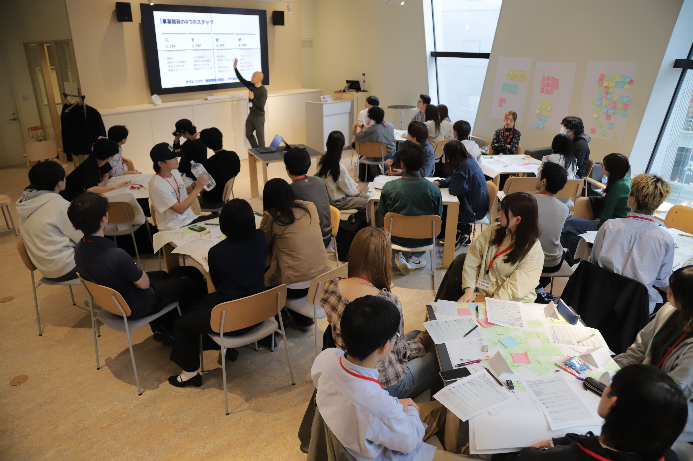
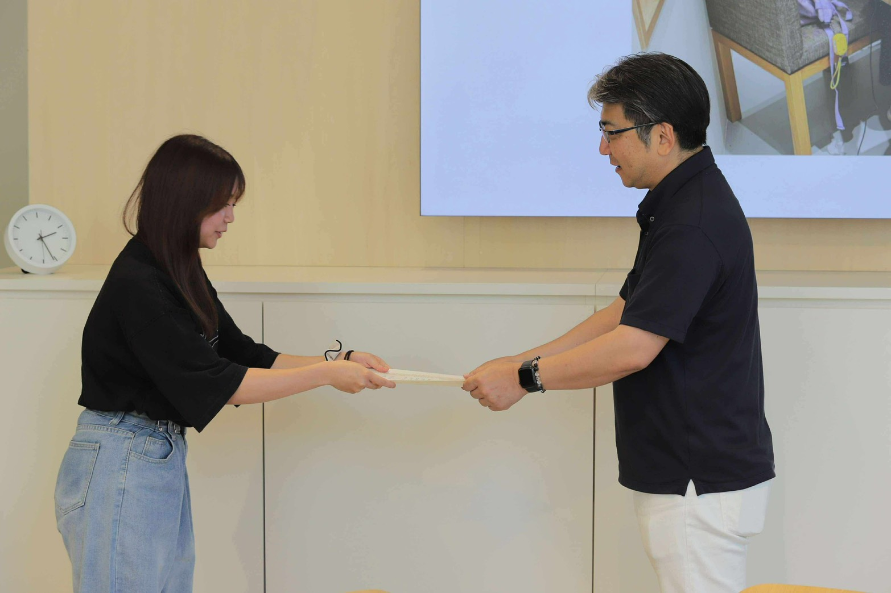

活動の概要と想い
ふじゼミでは、スタッフとしてプログラミングコンテストの運営や、小中学生へプログラミング体験会のメンターをしています。
また毎週Zoomで開催される勉強会では社会の変化について学ぶだけでなく、実際に自分で動かしてみたり、仲間と意見交流したりしながら学びを深めています。
先日大学生対象で行われた、北海道アントレプレナーシップ人材育成プログラムには受講生として参加し、新たな学びや力を身につけることができました。
ふじゼミの魅力
私の思うふじゼミの魅力は、年齢も専門も異なる人達が集まれる場所であるところです。
普段生活しているだけでは関われないような人達と話すことで、新しい価値観や考えに触れることができます。
また、ふじゼミには、目標に向かって努力し続ける仲間がいます。仲間たちの挑戦する姿やお話を見たり、聴いたりすることで自分も刺激を受け、「一緒に頑張ろう」と前向きな気持ちになり、挑戦することができています。
人との出会いと学びを通して、自分自身を成長させてくれる大切な場所です。


公式ホームページはこちら
ふじゼミの活動が下記のホームページに載っています！